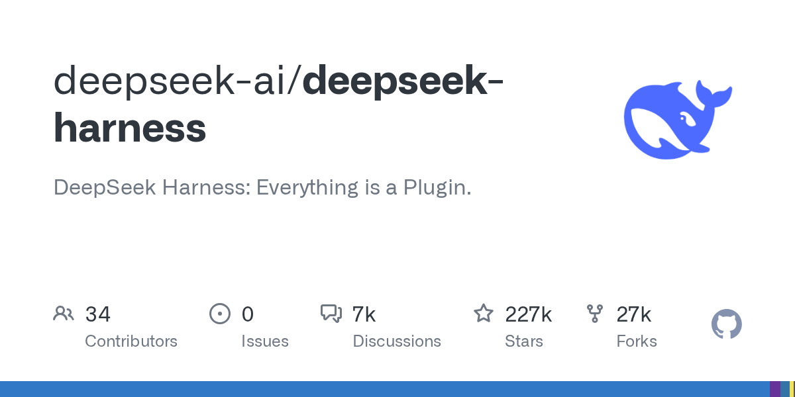

Threads｜DeepSeek Harness：一切皆插件的開源 Agent 執行框架，先讀安全公告再上手

一句話摘要
DeepSeek Harness 是可替換模型、工具、session 與 agent loop 的 Agent 執行框架；它適合研究私有 Agent 基礎設施與插件化設計，但官方定位仍是快速演進中的 developer preview，安全隔離不可省略。
社群分享與可證實事實
@magic.tw 分享它的「萬物皆插件」概念：模型 adapter、工具註冊表、session 儲存與 agent loop 都能替換，並提到 MCP、Web UI、CLI 與 MIT 授權。公開 GitHub 專案可確認：
- 專案為 `deepseek-ai/deepseek-harness`，官方描述為「Everything is a Plugin」，主要語言是 TypeScript，採 MIT License。
- README 將它稱為 DeepSeek AI 開發的 open-source agent harness，基於 Cordis 的可組合架構。
- 可用 `npx @deepseek-ai/dsh web` 啟動本機 Web UI，預設位址為 `http://127.0.0.1:3080`；也提供從原始碼以 `pnpm` 建置與啟動的路徑。
- 專案內含 MCP／browser-use 的實驗性套件與整合，但每個外掛、模型供應商與權限設定仍需個別檢查。
分享文中的「90 分鐘 22,000 星、12 小時破 5 萬」是發布當時的社群時間點快照，並非可長期引用的規格。此次查詢 GitHub API 時星數已不同，文章不以該數字作為產品能力依據。
官方安全公告比功能更重要
官方 `SAFETY.md` 指出它尚未經安全稽核，不應視為 secure 或 production-ready。因框架可執行模型生成的程式與指令、載入第三方 plugin、接觸被授權的網路、程序、憑證與檔案，錯誤輸出、惡意輸入、漏洞或不受信任外掛都可能造成檔案刪改、資料或憑證外洩及其他非預期影響。
沙箱、核准提示與權限控制只能降低風險，不能保證隔離；對被允許存取的資源，它們本來就無法提供完整保護。
建議的上手方式
- 只在 disposable VM、container 或獨立測試帳號中試跑；不要直接接到日常工作機與主要瀏覽器 profile。
- 使用最小權限：只掛載必要測試目錄，不提供雲端憑證、SSH key、密碼庫與生產 API key。
- 首輪只選受信任模型與少量內建工具；外部 MCP／plugin 要逐一讀程式碼、設定與資料流向。
- 保留檔案備份、命令與工具呼叫記錄；對刪檔、發送、購買、部署等高影響操作保留人工核准。
- 視它為開發研究平台；等介面與安全模型成熟、經內部評估後才考慮導入正式流程。
原始與官方來源
- Threads 分享：https://www.threads.com/share/BAB6l8P_ct/
- Threads canonical：https://www.threads.com/@magic.tw/post/DdWHF5WE9xX
- DeepSeek Harness GitHub：https://github.com/deepseek-ai/deepseek-harness
- 官方文件：https://deepseek-harness.github.io/deepseek-harness/
- 官方安全公告：https://github.com/deepseek-ai/deepseek-harness/blob/master/SAFETY.md